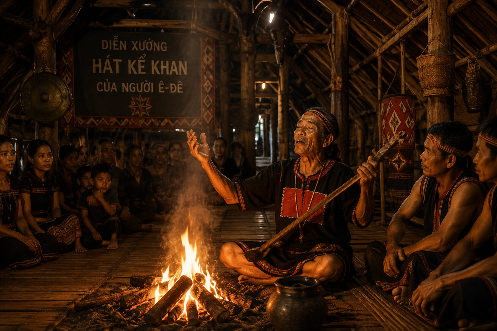
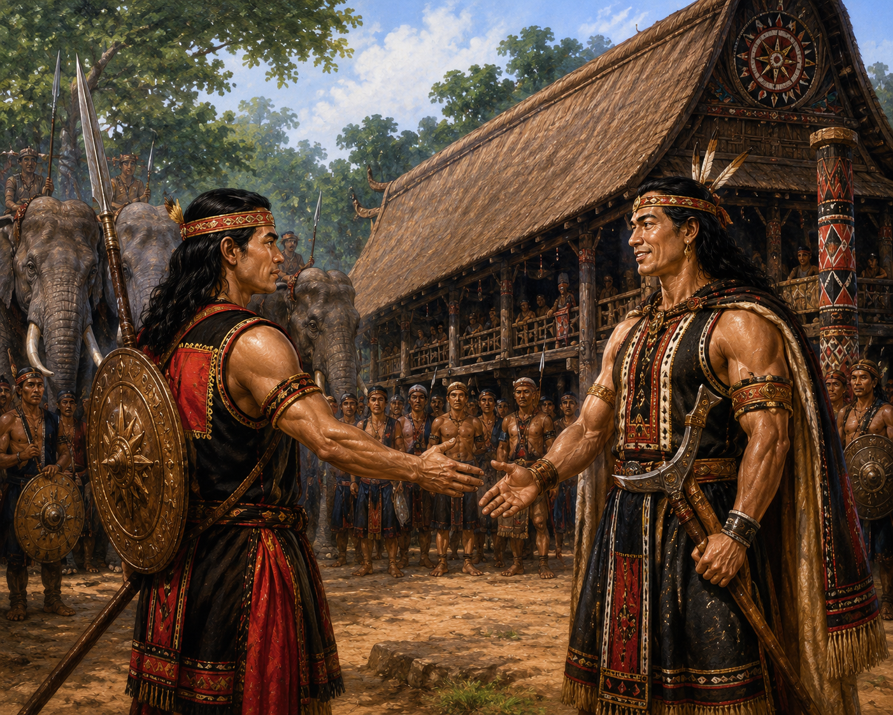

I TÌM HIỂU CHUNG
1 Thể loại và tác phẩm
Sử thi Đăm Săn (Khan Đăm Săn): Pho sử thi anh hùng nổi tiếng của dân tộc Ê-đê.
Hình thức diễn xướng: Hát kể khan. Già làng vừa kể, hát, vừa dùng nét mặt, điệu bộ diễn tả câu chuyện bên bếp lửa trong các nhà dài, trên chòi rẫy, dịp lễ hội hay lúc nông nhàn.

(Hình 1: Diễn xướng hát kể Khan của người Ê-đê bên bếp lửa nhà dài)
2 Vị trí đoạn trích & Tóm tắt
Vị trí: Nằm ở phần cuối của sử thi Đăm Săn (sau khi Đăm Săn chiến thắng Mtao Grự và Mtao Mxây, giải cứu Hơ Nhị, Hơ Bhị, trở thành tù trưởng giàu mạnh vang danh).
Tóm tắt: Đăm Săn quyết định đi bắt Nữ Thần Mặt Trời về làm vợ lẽ. Chàng vượt qua nhiều gian khó đến nhà Đăm Par Kvây nhờ dẫn đường. Mặc cho bạn khuyên ngăn về những nguy hiểm ở Rừng Đen, Đăm Săn vẫn một mực ra đi. Chàng đến được tòa nhà rực rỡ của Nữ Thần Mặt Trời, ngỏ lời nhưng bị từ chối vì việc Nữ Thần đi khỏi sẽ gây ra thảm họa cho muôn loài. Đăm Săn kiên quyết ra về và bị chìm đắm cùng con ngựa trong Rừng Đen khi mặt trời lên cao làm đất nhão ra.
II ĐỌC - KHÁM PHÁ CHI TIẾT VĂN BẢN
1 Hành trình đến nhà Đăm Par Kvây & Lời cảnh báo

(Hình 2: Đăm Săn gặp gỡ Đăm Par Kvây)
Chú ý các chi tiết mô tả Đăm Săn khi đến nhà của Đăm Par Kvây và cảnh tiếp đón tại đây.
Trả lời:
• Vẻ đẹp & uy dũng Đăm Săn: Đầu đội khăn nhiễu, vai mang nải hoa; giậm chân sàn sân vỗ cánh, hàng cột chao đảo; trông nghênh nghênh như con rắn, cọp trong đám, tê giác trong thung; tiếng nói oang oang như sấm gầm sét dậy.
• Cảnh tiếp đón: Trải chiếu trắng chiếu đỏ, đem hòm đồng thuốc sợi, trầu vỏ cả gùi; mổ gà mái ấp/đẻ, nấu cơm gạo trắng như hoa êpang; đem ché tuk da lươn, ché êbah Mnông quý giá ngã giá ba voi để đãi khách.
Phân tích lời khuyên của Đăm Par Kvây và thái độ phản ứng của Đăm Săn.
• Lời khuyên của Đăm Par Kvây: Cảnh báo đường đi nguy hiểm (nhiều cọp, rắn, đỉa, vắt, chông lớn nhỏ, Rừng Đen đất nhão vùi lấp nhiều tù trưởng dũng tướng). Đăm Par Kvây níu giữ bằng cúng lợn, tiễn trâu.
• Thái độ của Đăm Săn: Kiên quyết không lùi bước ("Người dũng tướng chắc chết mười mươi vẫn không lùi bước"), tự tin vào sức mạnh và bùa ngải của bản thân, thể hiện khát vọng phi thường đỉnh cao của người anh hùng.
2 Tới tòa nhà Nữ Thần Mặt Trời
(Hình 3: Cầu thang cầu vồng và tòa nhà rực rỡ của Nữ Thần Mặt Trời)
Cảnh tượng ngôi nhà và hình ảnh Nữ Thần Mặt Trời được miêu tả như thế nào?
• Ngôi nhà: Cầu thang như cầu vồng; cối, chày giã gạo bằng vàng lấp lánh; tòa nhà đài đằng đặc, xà ngang xà dọc thếp vàng; voi vây chặt sàn sân, chiêng xếp đầy nhà ngoài, tôi tớ tấp nập.
• Nữ Thần Mặt Trời: Váy ánh như sét, loáng như chớp; cửa buồng mở ra liền bừng sáng; đi như diều bay ó liệng; thân hình như nụ tai, cổ như cổ công – con của Thần Đất và Thần Trời.
3 Cuộc đối thoại và sự từ chối
Mục đích của Đăm Săn: Muốn Nữ Thần Mặt Trời xuống trần làm vợ lẽ (duê, êngai), làm chị làm em với Hơ Nhị, Hơ Bhị.
Lý do từ chối của Nữ Thần: Nữ Thần mang sứ mệnh duy trì sự sống vũ trụ. Nếu nàng đi, muôn loài (lợn, gà, cọp, trâu, con người, cây cối, sông suối) sẽ bị tuyệt diệt, chết cạn.
Phản ứng của Đăm Săn: Dù bị từ chối, Đăm Săn vẫn kiên quyết ra về, bất chấp lời cảnh báo nguy hiểm khi mặt trời lên làm nhão Rừng Đen: "Sống được chết đành! Tôi về đây."
Hình dung và cảm nhận cảnh Đăm Săn gặp nạn trong Rừng Đen?
Cảnh tượng: Khi mặt trời lên cao, đất Rừng Đen nhão ra dính như sáp. Ngựa của Đăm Săn lún dần từ đầu gối, đến bẹn, rồi ngang lưng, cuối cùng cả người và ngựa đều bị chìm đắm hoàn toàn trong Rừng Đen.
Ý nghĩa: Bi kịch của người anh hùng khi theo đuổi mục tiêu vượt quá giới hạn con người, muốn chinh phục và bắt quy phục cả lực lượng tự nhiên vũ trụ.
📌 Em có biết
Trong tín ngưỡng Ê-đê, Ông Điê là thần sáng tạo (pô cih), thần ban phước (pô thiê); Ông Đu là thần giữ gìn sinh mệnh con người. Ngoài ra, Y Đu và Hơ Kung là hai nhân vật canh giữ mặt trời và mặt trăng, chỉ gặp nhau khi xảy ra hiện tượng nhật thực hoặc nguyệt thực.
⚠️ Lưu ý
Lời văn sử thi Ê-đê đặc trưng bởi nghệ thuật so sánh phóng đại (ví dụ: giậm chân sàn sân vỗ cánh, tiếng nói như sấm gầm), thủ pháp trùng điệp, đòn đòn nhịp điệu phong phú, mang âm hưởng tráng lệ và giàu giá trị biểu cảm.
🌟 Em có thể
Tự tóm tắt văn bản bằng sơ đồ tư duy hành trình của Đăm Săn và viết một đoạn văn ngắn nêu cảm nhận về tinh thần dũng cảm, khát vọng tự do phi thường của nhân vật anh hùng sử thi Tây Nguyên.
III BẢNG TỔNG KẾT NGHỆ THUẬT VÀ NỘI DUNG
| Phương diện Nội dung | Phương diện Nghệ thuật |
|---|---|
|
• Khắc họa khát vọng phi thường chinh phục tự nhiên của người anh hùng Đăm Săn. • Thể hiện nhận thức của người cổ đại về ranh giới giữa con người và thần linh/vũ trụ. • Bức tranh phong phú về đời sống văn hóa, phong tục, tín ngưỡng Ê-đê. |
• Ngôn ngữ diễn xướng giàu nhịp điệu, so sánh phóng đại trùng điệp. • Nghệ thuật miêu tả nhân vật anh hùng và thần linh tráng lệ. • Xây dựng đối thoại kịch tính, giàu chất sử thi dân gian. |
🏆 GAMESHOW TRẮC NGHIỆM: AI LÀ TRIỆU PHÚ
Củng cố kiến thức mức độ Biết - Hiểu - Vận dụng thấp (10 câu hỏi)
IV BÀI TẬP TỰ LUẬN NẮNG CỦNG CỐ
Bài 1: Tóm tắt các sự kiện chính và nêu phẩm chất người anh hùng Đăm Săn
Tóm tắt các sự kiện chính trong đoạn trích. Qua đó, em hãy rút ra những phẩm chất tiêu biểu của tù trưởng Đăm Săn.
Lời giải chi tiết:
• Các sự kiện chính:
- Đăm Săn cùng Tăng Măng lên đường chinh phục Nữ Thần Mặt Trời.
- Đăm Săn ghé thăm nhà Đăm Par Kvây, được tiếp đón nồng hậu nhưng bỏ qua mọi lời can ngăn về Rừng Đen.
- Đăm Săn đến tòa nhà nguy nga của Nữ Thần Mặt Trời và ngỏ lời muốn cưới nàng làm vợ lẽ.
- Nữ Thần Mặt Trời từ chối vì việc nàng đi sẽ làm vạn vật suy vong.
- Đăm Săn kiên quyết ra về và bị chết lún cùng ngựa trong Rừng Đen khi mặt trời lên.
• Phẩm chất người anh hùng: Dũng cảm, dũng mãnh, quyết đoán, mang khát vọng phi thường, không khuất phục trước bất kỳ gian nguy hay thử thách tự nhiên nào.
Bài 2: Phân tích đặc trưng lời văn sử thi trong đoạn trích
Lời kể, lời miêu tả và lời đối thoại trong đoạn trích có vai trò gì trong việc thể hiện đặc trưng lời văn sử thi Ê-đê?
Lời giải chi tiết:
• Lời kể và miêu tả: Sử dụng triệt để nghệ thuật so sánh phóng đại (ví dụ: giậm chân làm sàn vỗ cánh, tiếng nói oang oang như sấm gầm) và thủ pháp trùng điệp tạo không khí trang trọng, kì vĩ cho thiên sử thi.
• Lời đối thoại: Rất cá tính và kịch tính. Đối thoại giữa Đăm Săn và Đăm Par Kvây thể hiện sự kiên định đối lập với sự sợ hãi thông thường; đối thoại giữa Đăm Săn và Nữ Thần Mặt Trời thể hiện sự xung đột giữa khát vọng cá nhân phi thường và quy luật tự nhiên vũ trụ.
Bài 3: Suy nghĩ về cái chết của Đăm Săn trong Rừng Đen
Phải chăng cái chết của Đăm Săn trong Rừng Đen là kết quả tất yếu của việc theo đuổi một mục tiêu vượt quá giới hạn con người?
Lời giải chi tiết:
• Cái chết của Đăm Săn phản ánh nhận thức khôn ngoan của người cổ đại: Con người dù dũng mãnh và kiệt xuất đến đâu cũng có những giới hạn không thể vượt qua trước sức mạnh và quy luật thống trị của tự nhiên/vũ trụ.
• Tuy nhiên, cái chết này không làm giảm đi tầm vóc người anh hùng. Nó thể hiện bi kịch mang tầm vóc sử thi – một cái chết ngẩng cao đầu trên hành trình chinh phục đỉnh cao, khẳng định ý chí phi thường và tâm thế không bao giờ lùi bước của con người thời đại thần thoại.